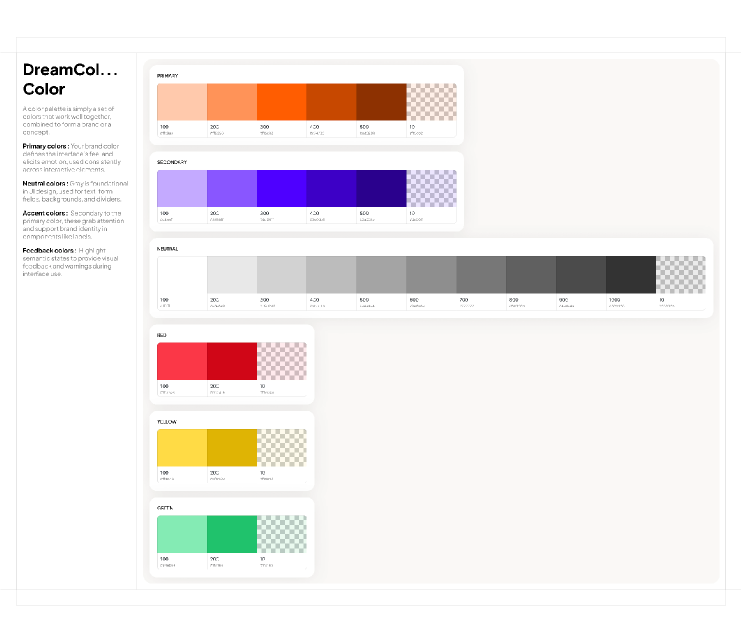
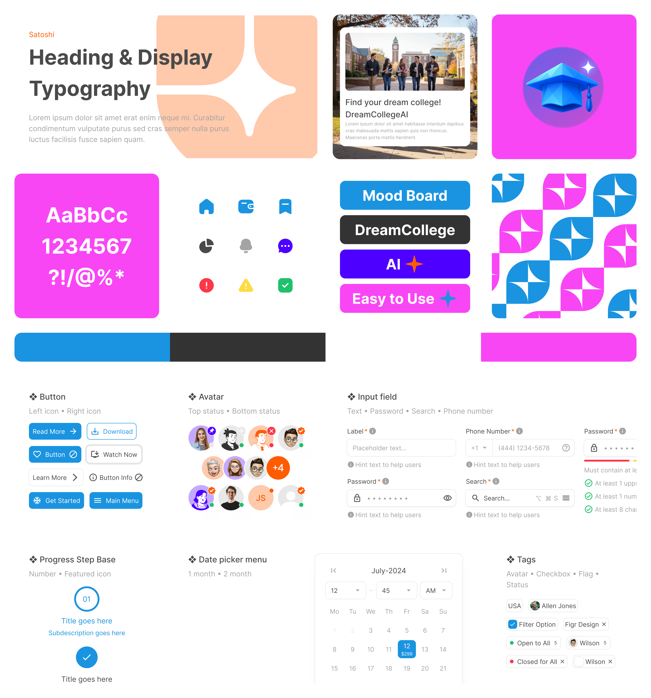
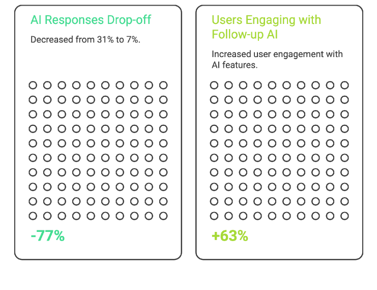

Three north-star principles · 48 components · Zero design drift
Visual Design & Design System
Working closely with the CEO and branding stakeholders, I developed a visual language balancing approachability with credibility. A gradient-heavy palette (blues → purples) conveyed innovation while differentiating us from corporate competitors.
- 48 reusable components (buttons, forms, cards, modals, nav)
- Design tokens for colors, typography, spacing, and shadows
- Naming conventions mirroring front-end frameworks (e.g., btn-primary-lg)
- Documentation for states, variations, and usage guidelines
- Weekly design-dev syncs with shared Figma libraries

Color system — primary, accent, neutral, semantic

Design system overview — typography, components, screens
Conversational AI — from 31% drop-off to 7%
One of the biggest UX challenges: keeping users engaged while the LLM generated responses (3–8 second delays). Initial testing showed 31% of users clicked away during loading, reporting they felt "ignored" or unsure if the system was working.
I designed a three-layer trust system: immediate acknowledgment (streaming animation), progressive disclosure (structured response format), and explainability (inline "why" callouts for every recommendation).

Three-layer AI transparency model

Drop-off −77% · Follow-up AI engagement +63%

Progressive profile building + transparent AI in production